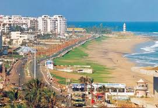
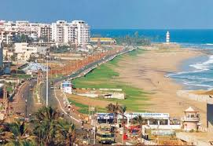

RK Beach, also known as Ramakrishna Beach, is one of the most popular beaches in Vizag. It’s a great place to relax, take a walk, and enjoy the beautiful view of the Bay of Bengal. The beach is named after the famous Indian saint, Swami Vivekananda, who meditated here in 1892. You can see a statue of him near the beach entrance. RK Beach is also known for its clean sand and calm waters, making it a favorite spot for families and tourists alike. There are several food stalls and shops nearby where you can buy snacks and souvenirs. Don’t forget to visit the INS Kursura Submarine Museum located on the beach, which is a unique attraction in Vizag.
 
